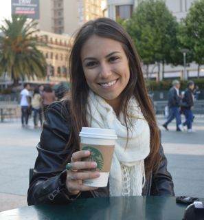

Who is Carla Vianna?

I am a third-year journalism student at the University of Florida specializing in online journalism. I will graduate in May of 2015. Interested in all things news and media related, I am looking for a summer internship to further my reporting, writing and multimedia skills.
I am currently interning as a part-time reporter for the Gainesville Sun, Gainesville’s city newspaper. I work in the newsroom 20 hours a week. I mostly write for the business beat, assisting business editor Anthony Clark.
I have most recently interned with University of Florida Relations as a social media intern. I was responsible for creating and managing the content for UF’s Twitter, Facebook, Instagram and Vine accounts. A few of my duties included answering and creating Facebook posts for an audience of more than 500,000 fans, writing accurate and relevant tweets for UF’s 59,000+ followers and photographing official UF events. Special attention was placed on accuracy and timeliness, two crucial aspects within the news realm.
During this time I also worked as a correspondent for the Gainesville Sun. The business editor would send me one to two story assignments per week. The deadline for each depended on the timeliness of the story.
Before this, I spent 8 months interning with Gainesville Today magazine. As an editorial intern, I was responsible for pitching creative ideas and writing 1500- to 2500-word feature stories for each monthly issue. While working on my feature-writing skills, I learned to pay close attention to the smallest details – because they’re the essence of all feature stories.
I have also written for the Independent Florida Alligator, the largest student-run newspaper in the U.S., as a freelancer. I mostly wrote about local news for the metro section of the paper.
A few fun facts about me: I am a dual citizen – American and Brazilian. I am fluent in Portuguese and speak intermediate Spanish. I have an outside concentration in psychology because I am curious about the way people think, feel and interact, which is why I enjoy writing about them so much. My mom lives in San Francisco and my dad lives in Sao Paulo, Brazil. I will always choose the cat’s side.
Feel free to email me at carla_vianna@ymail.com